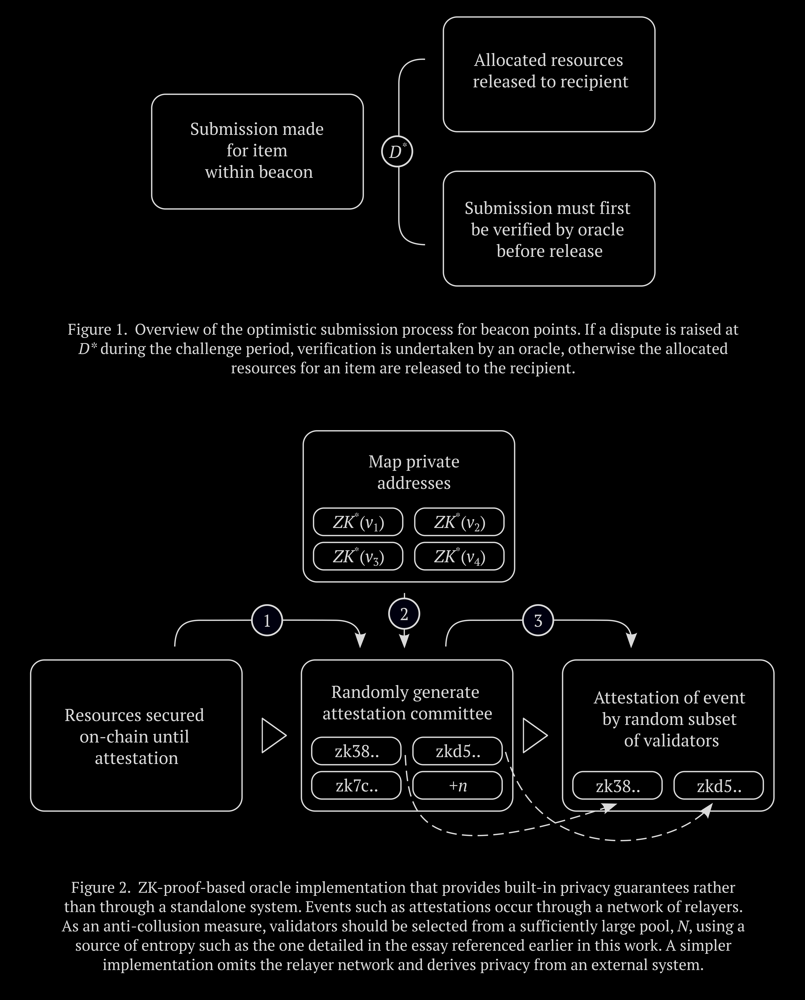

The following is a draft from early 2024 of Section 3 and 4 of a larger work that will be published later in the year.
Post-trust anarchism refers to approaches that are consistent with anarchistic ends but remove the need for typical trust assumptions. It is not describing a form of social organisation, nor does it attempt to make any prescriptions around whether people coming together in organisational contexts should trust each other or not. Rather, it’s about providing tools that empower participants of a collective to choose the role trust plays. It acknowledges that there is often intrinsic value in trust, but points to a sort of chicken and egg problem when it comes to the topic within organisational settings: do we tend to build our collectives with trust at the core because of an inherent desirability, or does it often become desirable as a result of perceived utility, and that if we were able to bring about similar benefits without the added risk, would we sometimes opt to do so?
The primary construct in this vein that we will be exploring is beacon points. From a very broad view, beacon points are a type of organisation that removes the need for direct forms of trust by binding resources in a way that is contingent on pre-defined outcomes set out by the broadcaster. For instance, a beacon point focused on developing a privacy tool or digital infrastructure for mutual aid networks, would first broadcast an immutable beacon, which constitutes a breakdown of the project’s actionable components and respective resource allocations in highly specific oracle-standardised language, and then only be able to proceed if a pre-defined threshold of resources becomes drawn to it. Those contributing resources do not need to trust the entity that broadcast the beacon as allocations are secured on-chain in a way that is dependent on pre-defined criteria being satisfied. Once a development submission pertaining to a specific item is made, for instance in the form of a git commit, the respective resource is disbursed to the recipient if a challenge period elapses unremarkably. On the other hand, if a challenge is brought forward, the bounty is only transferred to the recipient if a credibly neutral decentralised oracle confirms the validity of the submission.
These are obviously very software-centric examples, but as the nodes of the decentralised oracle can verify any objectively measurable off-chain event, there is no necessity to be limited to these sorts of projects. It should however be pointed out that even the short-term locking of resources is not appropriate for some types of projects, and where these resources are unavoidably needed upfront, more trust-based approaches, rather than beacon points, should be favoured.
The credible neutrality of the oracle is completely indispensable to the viability of the mechanism as a whole. This is expanded on in a later section, but broadly speaking, the oracle must attest to events in a way that is as objective as possible. The main tool that we have at our disposal to prevent the nodes that constitute the oracle from straying from their objectivity and acting as a fundamentally biased organ is encouraging them to arrive at a Schelling point through incentives, which in practical terms, usually amounts to rewarding nodes attesting within a high-threshold consensus while penalising those outside of it. Direct incentives alone are insufficient to bring us as close as possible to objective validation and other approaches need to be used in conjunction with it, such as randomly selecting validators from an expansive pool. Nevertheless, there will also always be some degree of subjectivity to attestation, but the idea is to minimise it to the greatest extent possible through the implements that we have in our arsenal.
One of the most important features of beacon points is their stigmergic design. In systems along this vein, a trace is left by an agent which may then stimulate other agents to expand upon it, amounting to an indirect mechanism of coordination that is arguably more resilient. A common example seen in nature that is useful for conceptual purposes involves ants leaving pheromones at a specific location, leading others to respond and eventually cumulate in the development of complex structures. In the context of beacon points, the lack of reliance on typical trust assumptions allows for a similar system of indirect coordination; the beacon containing the bound components is analogous to the trace and those responding by contributing resources and making submissions amounts to a form of collective action that doesn’t require direct communication. This is in contrast to conventional DAOs, which tend to be predicated by the idea of direct channels of coordination; a group of individuals get together, pool resources and then collectively decide how to direct those resources.
At a more fundamental level, can we even call a construct such as beacon points, which have so few moving parts, a form of organisation to begin with? That their immutability takes a much bigger leaf from the book of dapps than the tome of DAOs leads to a blurring of the line between the two. It is, however, far more useful to categorise beacon points as organisations that happen to take advantage of the trustless affordances of a distributed state machine rather than thinking of them as a form of application. One of the major reasons for this is that, in many circumstances depending on the collective aim, they can outright be used as an alternative to conventional DAOs rather than being just another tool in their wider arsenal. It is therefore more pragmatic to view typical DAOs as a type of hot organisation that consists of many moving parts and beacon points as a sort of cold organisation where there is less reliance on direct forms of trust.
By binding resources to pre-defined outcomes that may need to be verified by a decentralised oracle, we get another emergent property that makes beacon points well-suited to prefigurative organisations beyond the facets that were described earlier: the ability for all categories of participants to stay anonymous. While conventional DAOs usually allow some level of pseudonymity, the inherent design of beacon points takes this much further by discarding the reliance on reputation altogether and enabling a greater degree of privacy. For instance, a conventional DAO that focuses on grants generally facilitates contributors to remain pseudonymous but recipients tend to need to be trusted and have some form of demonstrable off-chain reputation as resources are not locked in a way that is contingent on outcomes. Beacon points, in contrast, are only concerned with pre-defined criteria being met for release rather than the trustworthiness of the recipients themselves. Anonymity is important in anarchist prefigurative contexts, not just because it is useful when challenging the power structures of the status quo, but because it brings us closer to something that reflects meaningful free association; standard DAOs that incentivise internal reputation inadvertently create friction for those looking to leave as the time and effort needed to build up reputation leads to more being at stake. Beacon points, on the other hand, have no reputational components, which allows participants to come and go more easily.
The lack of need for reputation, in turn, allows the mechanism to scale. The latter topic is somewhat contentious in anarchist contexts because historically there has been a favouring of scale through a federated network of small, reputation-based collectives, but this paradigm has arguably less relevance today, as early socialist literature could not foresee every affordance gained through newer technological developments. Distributed state machines break a lot of trade-offs that were conventionally seen as axiomatic because they allow scale in a way that maintains political and architectural decentralisation.
One of the criticisms of conventional DAOs that was briefly levelled in an earlier section was the tendency for participants to be engaged in a way that is not particularly dissimilar to standard work models, but with the lack of benefits seen in the gig economy. Beacon points themselves do not completely escape this sort of critique, however there are a few important considerations. The absence of an internal reputation system makes them more fluid and therefore easier for participants to come and go as there is less on the line, but more crucially, effectively prefiguring anarchistic relations means building a broad array of necessary structures in the here and now, and highly specific mechanisms such as beacon points are always going to be just one small part of this. As outlined in a previous essay by this author, a more egalitarian society would not hold basic needs hostage to direct reciprocity to begin with, so the solution is not to substitute these mechanisms for other self-organising that needs to take place that guarantees these necessities unconditionally, but to view them as part of a broader constellation.
At the outset of this work, it was also emphasised that a recurring premise of anarchism is that the means we use are inseparably tied to the ends we will achieve. Given that the sort of projects that will be typically associated with beacon points are often developed on a volunteer basis, does bringing direct rewards into the mix introduce the risk of somewhat deviating from anarchistic means and, in the process, achieving ends that are also at odds with it to an extent? One of the ways to show that this argument does not hold a lot of water is by considering that notable anarchists and anarchist-adjacent theorists such as Peter Gelderloos and Noam Chomsky have long explored direct reward systems even in economic substrates that are fundamentally based on mutual aid rather than simple reciprocity. Beacon points are just one mechanism in a broad arsenal, and importantly, they don’t translate into the sort of concentrated power dynamics that would be seen in forms of social organisation that are actually antithetical to anarchism. On a tangibly related front, cryptoeconomic incentives are leaned on for more peripheral aspects such as securing the oracle component because they are currently the most proven approach we have available to reach Schelling points that simultaneously address the Sybil problem. However, as outlined in the essay leading up to this work, a move towards non-monetary incentives to secure the oracle would be more ideal and should be explored as our understanding of them grows and they become increasingly battle tested.
Beacon points have very specific aims defined by the items that constitute the beacon itself. They are not open-ended, permanent constructs, and become functionally inactive when the bound resources are disbursed. This usually means they are quite ephemeral in nature, although their more complex forms tend to translate into longer active periods. They must be able to be deployed trivially and, if needed, synergistically combine with other beacon points to form a larger, overarching purpose. Their immutable nature has the implication that critical unforeseen issues necessitate a hard fork rather than amending the beacon directly, and this, in turn, further incentivises developers to keep their scope manageable as there are often practical limits to how much can be planned ahead. When running into the latter limitations, the solution is generally to deploy another beacon point in the future that builds off the work of the previous one. Broadly speaking, this approach is an inefficient way to work towards a specific aim, but beacon points are not optimised for efficiency; they are designed to remove typical trust assumptions to the greatest extent possible, and are therefore immutable so potential participants can ascertain exactly how resources will be used in advance.
The general flow is as follows: an immutable beacon, primarily detailing discrete items and their respective resource allocations, is first broadcast and a minimum threshold of resources needs to be drawn to it in order for it to be viable. If this threshold is not reached within a pre-determined period, contributors are able to exit their existing resources. With both the beacon deployed and contributions allocated, an entity can make a submission for a specific item and receive the allocation if a challenge window elapses without a dispute being raised, making the submission process an optimistic mechanism. If, on the other hand, a challenge is raised, a credibly neutral decentralised oracle must first verify its consistency with pre-defined criteria specified at the outset. The stigmergic design of the system as a whole means direct communication between the various types of participants is not needed.
The beacon must contain clearly-defined items in highly specific oracle-standardised language, the amount of resources that will be bound to each item, identifiers for the specific oracle that will be used in the event that a submission is disputed, and other parameters such as the time that needs to elapse before contributors can exit if a threshold of resources is not realised or valid submissions for outstanding items are not made. This is a non-exhaustive list that only serves to outline the major components rather than a technical specification of all the needed elements, particularly because there will be variations depending on the specific implementation. All essential parameters of the beacon are stored on-chain, and hashes that resolve to content off-chain in a deterministic way should only be considered for meta elements that are not integral to its functionality.
In order to disincentivise non-genuine submissions and spam, the submitter needs to simultaneously post a relatively small bond. Disputers raising a challenge within a given window need to post their own bond, and the bonds of both parties are subject to the Schelling point that is reached by the credibly neutral oracle. This is part of the reason why it is so important that the individual items that comprise the beacon are as small and discreet as practically possible, as it helps reduce the degree of subjectivity involved when assessing if a submission meets pre-defined criteria. Even though the amounts used for the bonds will be relatively small, their loss should be a rare occurrence in the setting of a properly configured beacon point, and a pattern that emerges to the contrary will usually be indicative of poorly defined criteria for disbursement, inadequate incentives or a design problem with the oracle component.
The decentralised oracle that is defaulted to when a submission is disputed has only one purpose: to verify that the criteria for an item have been met. As outlined earlier, the system is unviable without credible neutrality, and in order to incentivise that the task is carried out in a way that is objective as possible, a typical implementation will issue rewards to validators that attest within a high-threshold consensus and penalise those outside of it via slashing. Without the use of mechanisms rooted in game theory to arrive at a Schelling point, other approaches such as reputation systems would need to be resorted to in order to address the Sybil problem and encourage honest attestation, and as also touched previously, these are a poor fit for beacon points, which are permissionless mechanisms specifically designed to allow easy scaling, complete anonymity and have as little barrier as possible for participants to come and go. As a means to discourage collusion and increase liveness, nodes chosen to attest should be randomly selected from a sufficiently large pool. The in-depth specifics on how the latter entropy can be achieved, and other peripheral aspects pertaining to the oracle component, are outside the scope of this work as they have been detailed in an earlier essay.
One of the implications of the inherent design of beacon points is that all submissions for a particular item, even those that are not validated, are open source and in the public domain. Beacon points are decentralised constructs that do not belong to any particular jurisdiction, and there is no real mechanism, or need, to prevent anyone from being able to copy, modify, resubmit or even repurpose a submission for a different context altogether. This lack of organisational secrets is a feature, not a bug, and prefigurative structures of this type would not be particularly interested in restricting the flow of information to begin with. Participants acting in bad faith by cloning and resubmitting an entry are unlikely to gain much advantage as resources are distributed to the first valid submission.
Putting all this together, beacon points require several base components to function. The immutable beacon is the most fundamental element, followed by the automatic processes that enable the submission process and manage the distribution of resources, and finally, the decentralised oracle that is turned to in the event of a challenge being raised. While some of these building blocks, particularly around the beacon itself, are both novel and have yet to be combined in a production environment along the specific lines described, it should give cause for encouragement that other aspects have already been battle tested. For instance, when looking at the oracle component, there are examples not particularly dissimilar to the form described in this work that have been operating on mainnets for years, even if there are some key differences in their design and the type of events that they typically validate tend to be somewhat divergent. All of this reinforces the idea that beacon points are not abstract constructs that are quite a bit of time away, but are already viable in the here and now. The main implementation currently being worked on is centred around software-based examples, as these are the lowest hanging fruit, but will eventually evolve to accommodate more complex projects.